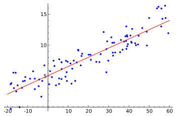
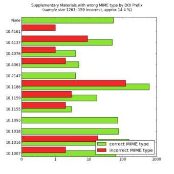

Table of Contents
1. Introduction to Statistics and Statistical Thinking
1.1. Overview
1.1.1. Collecting and Measuring Data
1.1.2. What Is Statistics?
1.1.3. The Purpose of Statistics
1.1.4. Inferential Statistics
1.1.5. Types of Data
1.1.6. Applications of Statistics
1.1.7. Fundamentals of Statistics
1.1.8. Critical Thinking
1.1.9. Experimental Design
1.1.10. Random Samples
1. Introduction to Statistics and Statistical Thinking
1.1. Overview
1.1.1. Collecting and Measuring Data
There are four main levels of measurement: nominal, ordinal, interval, and ratio.
Learning Objective
Distinguish between the nominal, ordinal, interval and ratio methods of data measurement.
Key Points
- Ratio measurements provide the greatest flexibility in statistical methods that can be used for analyzing the data.
- Interval data allows for the degree of difference between items, but not the ratio between them.
- Ordinal measurements have imprecise differences between consecutive values, but have a meaningful order to those values.
- Variables conforming only to nominal or ordinal measurements cannot be reasonably measured numerically, they are often grouped together as categorical variables.
- Ratio and interval measurements are grouped together as quantitative variables.
- Nominal measurements have no meaningful rank order among values.
Key Terms
- sampling
- the process or technique of obtaining a representative sample
- population
- a group of units (persons, objects, or other items) enumerated in a census or from which a sample is drawn
Example
- An example of an observational study is one that explores the correlation between smoking and lung cancer. This type of study typically uses a survey to collect observations about the area of interest and then performs statistical analysis. In this case, the researchers would collect observations of both smokers and non-smokers, perhaps through a case-control study, and then look for the number of cases of lung cancer in each group.
There are four main levels of measurement used in statistics: nominal, ordinal, interval, and ratio. Each of these have different degrees of usefulness in statistical research. Data is collected about a population by random sampling .
Nominal measurements have no meaningful rank order among values. Nominal data differentiates between items or subjects based only on qualitative classifications they belong to. Examples include gender, nationality, ethnicity, language, genre, style, biological species, visual pattern, etc.
{kind=link}
In applying statistics to a scientific, industrial, or societal problem, it is necessary to begin with a population or process to be studied. Populations can be diverse topics such as "all persons living in a country" or "all stamps produced in the year 1943".
Ordinal measurements have imprecise differences between consecutive values, but have a meaningful order to those values. Ordinal data allows for rank order (1st, 2nd, 3rd, etc) by which data can be sorted, but it still does not allow for relative degree of difference between them. Examples of ordinal data include dichotomous values such as "sick" versus "healthy" when measuring health, "guilty" versus "innocent" when making judgments in courts, "false" versus "true", when measuring truth value. Examples also include non-dichotomous data consisting of a spectrum of values, such as "completely agree", "mostly agree", "mostly disagree", or "completely disagree" when measuring opinion.
Interval measurements have meaningful distances between measurements defined, but the zero value is arbitrary (as in the case with longitude and temperature measurements in Celsius or Fahrenheit). Interval data allows for the degree of difference between items, but not the ratio between them. Ratios are not allowed with interval data since 20°C cannot be said to be "twice as hot" as 10°C, nor can multiplication/division be carried out between any two dates directly. However, ratios of differences can be expressed; for example, one difference can be twice another. Interval type variables are sometimes also called "scaled variables".
Ratio measurements have both a meaningful zero value and the distances between different measurements are defined; they provide the greatest flexibility in statistical methods that can be used for analyzing the data.
Because variables conforming only to nominal or ordinal measurements cannot be reasonably measured numerically, sometimes they are grouped together as categorical variables, whereas ratio and interval measurements are grouped together as quantitative variables, which can be either discrete or continuous, due to their numerical nature.
Measurement processes that generate statistical data are also subject to error. Many of these errors are classified as random (noise) or systematic (bias), but other important types of errors (e.g., blunder, such as when an analyst reports incorrect units) can also be important.
1.1.2. What Is Statistics?
Statistics is the study of the collection, organization, analysis, interpretation, and presentation of data.
Learning Objective
Define the field of Statistics in terms of its definition, application and history.
Key Points
- Statistics combines mathematical and non-mathematical procedures into one discipline.
- Statistics is generally broken down into two categories: descriptive statistics and inferential statistics.
- Statistics is an applied science and is used in many fields, including the natural and social sciences, government, and business.
- The use of statistical methods dates back to at least the 5th century BC.
Key Terms
- statistics
- a mathematical science concerned with data collection, presentation, analysis, and interpretation
- empirical
- verifiable by means of scientific experimentation
Example
- Say you want to conduct a poll on whether your school should use its funding to build a new athletic complex or a new library. Appropriate questions to ask would include: How many people do you have to poll? How do you ensure that your poll is free of bias? How do you interpret your results?
Statistics Overview
Statistics is the study of the collection, organization, analysis, interpretation, and presentation of data. It deals with all aspects of data, including the planning of its collection in terms of the design of surveys and experiments. Some consider statistics a mathematical body of science that pertains to the collection, analysis, interpretation or explanation, and presentation of data, while others consider it a branch of mathematics concerned with collecting and interpreting data. Because of its empirical roots and its focus on applications, statistics is usually considered a distinct mathematical science rather than a branch of mathematics. As one would expect, statistics is largely grounded in mathematics, and the study of statistics has lent itself to many major concepts in mathematics, such as:
- probability,
- distributions ,
- samples and populations,
- estimation, and
- data analysis.
However, much of statistics is also non-mathematical. This includes:
- ensuring that data collection is undertaken in a way that produces valid conclusions,
- coding and archiving data so that information is retained and made useful for international comparisons of official statistics,
- reporting of results and summarized data (tables and graphs) in ways comprehensible to those who must use them, and
- implementing procedures that ensure the privacy of census information.
In short, statistics is the study of data. It includes descriptive statistics (the study of methods and tools for collecting data, and mathematical models to describe and interpret data) and inferential statistics (the systems and techniques for making probability-based decisions and accurate predictions based on incomplete data).
How Do We Use Statistics?
A statistician is someone who is particularly well-versed in the ways of thinking necessary to successfully apply statistical analysis. Such people often gain experience through working in any of a wide number of fields. Statisticians improve data quality by developing specific experimental designs and survey samples. Statistics itself also provides tools for predicting and forecasting the use of data and statistical models. Statistics is applicable to a wide variety of academic disciplines, including natural and social sciences, government, and business. Statistical consultants can help organizations and companies that don't have in-house expertise relevant to their particular questions.
History of Statistics
Statistical methods date back at least to the 5th century BC. The earliest known writing on statistics appears in a 9th century book entitled Manuscript on Deciphering Cryptographic Messages, written by Al-Kindi. In this book, Al-Kindi provides a detailed description of how to use statistics and frequency analysis to decipher encrypted messages. This was the birth of both statistics and cryptanalysis, according to the Saudi engineer Ibrahim Al-Kadi.
The Nuova Cronica, a 14th century history of Florence by the Florentine banker and official Giovanni Villani, includes much statistical information on population, ordinances, commerce, education, and religious facilities, and has been described as the first introduction of statistics as a positive element in history.
Some scholars pinpoint the origin of statistics to 1663, with the publication of Natural and Political Observations upon the Bills of Mortality by John Graunt. Early applications of statistical thinking revolved around the needs of states to base policy on demographic and economic data, hence its "stat-" etymology. The scope of the discipline of statistics broadened in the early 19th century to include the collection and analysis of data in general.
1.1.3. The Purpose of Statistics
Statistics teaches people to use a limited sample to make intelligent and accurate conclusions about a greater population.
Learning Objective
Describe how Statistics helps us to make inferences about a population, understand and interpret variation, and make more informed everyday decisions.
Key Points
- Statistics is an extremely powerful tool available for assessing the significance of experimental data and for drawing the right conclusions from it.
- Statistics helps scientists, engineers, and many other professionals draw the right conclusions from experimental data.
- Variation is ubiquitous in nature, and probability and statistics are the fields that allow us to study, understand, model, embrace and interpret this variation.
Key Terms
- sample
- a subset of a population selected for measurement, observation, or questioning to provide statistical information about the population
- population
- a group of units (persons, objects, or other items) enumerated in a census or from which a sample is drawn
Example
- A company selling the cat food brand "Cato" (a fictitious name here), may claim quite truthfully in their advertisements that eight out of ten cat owners said that their cats preferred Cato brand cat food to "the other leading brand" cat food. What they may not mention is that the cat owners questioned were those they found in a supermarket buying Cato, which doesn't represent an unbiased sample of cat owners.
Imagine reading a book for the first few chapters and then being able to get a sense of what the ending will be like. This ability is provided by the field of inferential statistics. With the appropriate tools and solid grounding in the field, one can use a limited sample (e.g., reading the first five chapters of Pride & Prejudice) to make intelligent and accurate statements about the population (e.g., predicting the ending of Pride & Prejudice).
Those proceeding to higher education will learn that statistics is an extremely powerful tool available for assessing the significance of experimental data and for drawing the right conclusions from the vast amounts of data encountered by engineers, scientists, sociologists, and other professionals in most spheres of learning. There is no study with scientific, clinical, social, health, environmental or political goals that does not rely on statistical methodologies. The most essential reason for this fact is that variation is ubiquitous in nature, and probability and statistics are the fields that allow us to study, understand, model, embrace and interpret this variation.
In today's information-overloaded age, statistics is one of the most useful subjects anyone can learn. Newspapers are filled with statistical data, and anyone who is ignorant of statistics is at risk of being seriously misled about important real-life decisions such as what to eat, who is leading the polls, how dangerous smoking is, et cetera. Statistics are often used by politicians, advertisers, and others to twist the truth for their own gain. Knowing at least a little about the field of statistics will help one to make more informed decisions about these and other important questions.
{kind=link}
Statistics teaches people to use a limited sample to make intelligent and accurate conclusions about a greater population. The use of tables, graphs, and charts play a vital role in presenting the data being used to draw these conclusions.
1.1.4. Inferential Statistics
The mathematical procedure in which we make intelligent guesses about a population based on a sample is called inferential statistics.
Learning Objective
Discuss how inferential statistics allows us to draw conclusions about a population from a random sample and corresponding tests of significance.
Key Points
- Inferential statistics is used to describe systems of procedures that can be used to draw conclusions from data sets arising from systems affected by random variation, such as observational errors, random sampling, or random experimentation.
- Samples must be representative of the entire population in order to induce a conclusion about that population.
- Statisticians use tests of significance to determine the probability that the results were found by chance.
Key Term
- inferential statistics
- A branch of mathematics that involves drawing conclusions about a population based on sample data drawn from it.
In statistics, statistical inference is the process of drawing conclusions from data that is subject to random variation--for example, observational errors or sampling variation. More substantially, the terms statistical inference, statistical induction, and inferential statistics are used to describe systems of procedures that can be used to draw conclusions from data sets arising from systems affected by random variation, such as observational errors, random sampling, or random experimentation. Initial requirements of such a system of procedures for inference and induction are that the system should produce reasonable answers when applied to well-defined situations and that it should be general enough to be applied across a range of situations.
The outcome of statistical inference may be an answer to the question "what should be done next? " where this might be a decision about making further experiments or surveys, or about drawing a conclusion before implementing some organizational or governmental policy.
Suppose you have been hired by the National Election Commission to examine how the American people feel about the fairness of the voting procedures in the U.S. How will you do it? Who will you ask?
It is not practical to ask every single American how he or she feels about the fairness of the voting procedures. Instead, we query a relatively small number of Americans, and draw inferences about the entire country from their responses. The Americans actually queried constitute our sample of the larger population of all Americans. The mathematical procedures whereby we convert information about the sample into intelligent guesses about the population fall under the rubric of inferential statistics.
In the case of voting attitudes, we would sample a few thousand Americans, drawn from the hundreds of millions that make up the country. In choosing a sample, it is therefore crucial that it be representative. It must not over-represent one kind of citizen at the expense of others. For example, something would be wrong with our sample if it happened to be made up entirely of Florida residents. If the sample held only Floridians, it could not be used to infer the attitudes of other Americans. The same problem would arise if the sample were comprised only of Republicans. Inferential statistics are based on the assumption that sampling is random. We trust a random sample to represent different segments of society in close to the appropriate proportions (provided the sample is large enough).
Furthermore, when generalizing a trend found in a sample to the larger population, statisticians uses tests of significance (such as the Chi-Square test or the T-test). These tests determine the probability that the results found were by chance, and therefore not representative of the entire population.
{kind=link}
This graph shows a linear regression model, which is a tool used to make inferences in statistics.
1.1.5. Types of Data
Data can be categorized as either primary or secondary and as either qualitative or quantitative.
Learning Objective
Differentiate between primary and secondary data and qualitative and quantitative data.
Key Points
- Primary data is data collected first-hand. Secondary data is data reused from another source.
- Qualitative data is a categorical measurement expressed not in terms of numbers, but rather by means of a natural language description.
- Quantitative data is a numerical measurement expressed not by means of a natural language description, but rather in terms of numbers.
Key Terms
- primary data
- data that has been compiled for a specific purpose, and has not been collated or merged with others
- qualitative data
- data centered around descriptions or distinctions based on some quality or characteristic rather than on some quantity or measured value
- quantitative
- of a measurement based on some quantity or number rather than on some quality
Example
- Qualitative data: race, religion, gender, etc. Quantitative data: height in inches, time in seconds, temperature in degrees, etc.
Primary and Secondary Data
Data can be classified as either primary or secondary. Primary data is original data that has been collected specially for the purpose in mind. This type of data is collected first hand. Those who gather primary data may be an authorized organization, investigator, enumerator or just someone with a clipboard. These people are acting as a witness, so primary data is only considered as reliable as the people who gather it. Research where one gathers this kind of data is referred to as field research. An example of primary data is conducting your own questionnaire.
Secondary data is data that has been collected for another purpose. This type of data is reused, usually in a different context from its first use. You are not the original source of the data--rather, you are collecting it from elsewhere. An example of secondary data is using numbers and information found inside a textbook.
Knowing how the data was collected allows critics of a study to search for bias in how it was conducted. A good study will welcome such scrutiny. Each type has its own weaknesses and strengths. Primary data is gathered by people who can focus directly on the purpose in mind. This helps ensure that questions are meaningful to the purpose, but this can introduce bias in those same questions. Secondary data doesn't have the privilege of this focus, but is only susceptible to bias introduced in the choice of what data to reuse. Stated another way, those who gather secondary data get to pick the questions. Those who gather primary data get to write the questions. There may be bias either way.
Qualitative and Quantitative Data
Qualitative data is a categorical measurement expressed not in terms of numbers, but rather by means of a natural language description. In statistics, it is often used interchangeably with "categorical" data. Collecting information about a favorite color is an example of collecting qualitative data. Although we may have categories, the categories may have a structure to them. When there is not a natural ordering of the categories, we call these nominal categories. Examples might be gender, race, religion, or sport. When the categories may be ordered, these are called ordinal categories. Categorical data that judge size (small, medium, large, etc. ) are ordinal categories. Attitudes (strongly disagree, disagree, neutral, agree, strongly agree) are also ordinal categories; however, we may not know which value is the best or worst of these issues. Note that the distance between these categories is not something we can measure.
Quantitative data is a numerical measurement expressed not by means of a natural language description, but rather in terms of numbers. Quantitative data always are associated with a scale measure. Probably the most common scale type is the ratio-scale. Observations of this type are on a scale that has a meaningful zero value but also have an equidistant measure (i.e. the difference between 10 and 20 is the same as the difference between 100 and 110). For example, a 10 year-old girl is twice as old as a 5 year-old girl. Since you can measure zero years, time is a ratio-scale variable. Money is another common ratio-scale quantitative measure. Observations that you count are usually ratio-scale (e.g. number of widgets). A more general quantitative measure is the interval scale. Interval scales also have an equidistant measure. However, the doubling principle breaks down in this scale. A temperature of 50 degrees Celsius is not "half as hot" as a temperature of 100, but a difference of 10 degrees indicates the same difference in temperature anywhere along the scale.

The graph shows a display of quantitative data.
1.1.6. Applications of Statistics
Statistics deals with all aspects of the collection, organization, analysis, interpretation, and presentation of data.
Learning Objective
Describe how statistics is applied to scientific, industrial, and societal problems.
Key Points
- Statistics can be used to improve data quality by developing specific experimental designs and survey samples.
- Statistics includes the planning of data collection in terms of the design of surveys and experiments.
- Statistics provides tools for prediction and forecasting and is applicable to a wide variety of academic disciplines, including natural and social sciences, as well as government, and business.
Key Terms
- population
- a group of units (persons, objects, or other items) enumerated in a census or from which a sample is drawn
- statistics
- The study of the collection, organization, analysis, interpretation, and presentation of data.
- sample
- a subset of a population selected for measurement, observation, or questioning to provide statistical information about the population
Example
- In calculating the arithmetic mean of a sample, for example, the algorithm works by summing all the data values observed in the sample and then dividing this sum by the number of data items. This single measure, the mean of the sample, is called a statistic; its value is frequently used as an estimate of the mean value of all items comprising the population from which the sample is drawn. The population mean is also a single measure; however, it is not called a statistic; instead it is called a population parameter.
Statistics deals with all aspects of the collection, organization, analysis, interpretation, and presentation of data. It includes the planning of data collection in terms of the design of surveys and experiments.
Statistics can be used to improve data quality by developing specific experimental designs and survey samples. Statistics also provides tools for prediction and forecasting. Statistics is applicable to a wide variety of academic disciplines, including natural and social sciences as well as government and business. Statistical consultants can help organizations and companies that don't have in-house expertise relevant to their particular questions.
Descriptive and Inferential Statistics
Statistical methods can summarize or describe a collection of data. This is called descriptive statistics . This is particularly useful in communicating the results of experiments and research. Statistical models can also be used to draw statistical inferences about the process or population under study—a practice called inferential statistics. Inference is a vital element of scientific advancement, since it provides a way to draw conclusions from data that are subject to random variation. Conclusions are tested in order to prove the propositions being investigated further, as part of the scientific method. Descriptive statistics and analysis of the new data tend to provide more information as to the truth of the proposition.

In descriptive statistics, summary statistics are used to summarize a set of observations, in order to communicate the largest amount as simply as possible. This Boxplot represents Michelson and Morley's data on the speed of light. It consists of five experiments, each made of 20 consecutive runs.
The Statistical Process
When applying statistics to a scientific, industrial, or societal problems, it is necessary to begin with a population or process to be studied. Populations can be diverse topics such as "all persons living in a country" or "every atom composing a crystal". A population can also be composed of observations of a process at various times, with the data from each observation serving as a different member of the overall group. Data collected about this kind of "population" constitutes what is called a time series. For practical reasons, a chosen subset of the population called a sample is studied—as opposed to compiling data about the entire group (an operation called census). Once a sample that is representative of the population is determined, data is collected for the sample members in an observational or experimental setting. This data can then be subjected to statistical analysis, serving two related purposes: description and inference.
Descriptive statistics summarize the population data by describing what was observed in the sample numerically or graphically. Numerical descriptors include mean and standard deviation for continuous data types (like heights or weights), while frequency and percentage are more useful in terms of describing categorical data (like race). Inferential statistics uses patterns in the sample data to draw inferences about the population represented, accounting for randomness. These inferences may take the form of: answering yes/no questions about the data (hypothesis testing), estimating numerical characteristics of the data (estimation), describing associations within the data (correlation) and modeling relationships within the data (for example, using regression analysis). Inference can extend to forecasting, prediction and estimation of unobserved values either in or associated with the population being studied. It can include extrapolation and interpolation of time series or spatial data and can also include data mining.
Statistical Analysis
Statistical analysis of a data set often reveals that two variables of the population under consideration tend to vary together, as if they were connected. For example, a study of annual income that also looks at age of death might find that poor people tend to have shorter lives than affluent people. The two variables are said to be correlated; however, they may or may not be the cause of one another. The correlation could be caused by a third, previously unconsidered phenomenon, called a confounding variable. For this reason, there is no way to immediately infer the existence of a causal relationship between the two variables.
To use a sample as a guide to an entire population, it is important that it truly represent the overall population. Representative sampling assures that inferences and conclusions can safely extend from the sample to the population as a whole. A major problem lies in determining the extent that the sample chosen is actually representative. Statistics offers methods to estimate and correct for any random trending within the sample and data collection procedures. There are also methods of experimental design for experiments that can lessen these issues at the outset of a study, strengthening its capability to discern truths about the population. Randomness is studied using the mathematical discipline of probability theory. Probability is used in "mathematical statistics" (alternatively, "statistical theory") to study the sampling distributions of sample statistics and, more generally, the properties of statistical procedures. The use of any statistical method is valid when the system or population under consideration satisfies the assumptions of the method.
1.1.7. Fundamentals of Statistics
In applying statistics to a scientific, industrial, or societal problem, it is necessary to begin with a population or process to be studied.
Learning Objective
Recall that the field of Statistics involves using samples to make inferences about populations and describing how variables relate to each other.
Key Points
- For practical reasons, a chosen subset of the population called a sample is studied—as opposed to compiling data about the entire group (an operation called census).
- Descriptive statistics summarizes the population data by describing what was observed in the sample numerically or graphically.
- Inferential statistics uses patterns in the sample data to draw inferences about the population represented, accounting for randomness.
- Statistical analysis of a data set often reveals that two variables (properties) of the population under consideration tend to vary together, as if they were connected.
- To use a sample as a guide to an entire population, it is important that it truly represent the overall population.
Key Terms
- sample
- a subset of a population selected for measurement, observation, or questioning to provide statistical information about the population
- variable
- a quantity that may assume any one of a set of values
- population
- a group of units (persons, objects, or other items) enumerated in a census or from which a sample is drawn
Example
- A population can be composed of observations of a process at various times, with the data from each observation serving as a different member of the overall group. Data collected about this kind of "population" constitutes what is called a time series.
In applying statistics to a scientific, industrial, or societal problem, it is necessary to begin with a population or process to be studied. Populations can be diverse topics such as "all persons living in a country" or "every atom composing a crystal.". A population can also be composed of observations of a process at various times, with the data from each observation serving as a different member of the overall group. Data collected about this kind of "population" constitutes what is called a time series.
For practical reasons, a chosen subset of the population called a sample is studied—as opposed to compiling data about the entire group (an operation called census). Once a sample that is representative of the population is determined, data is collected for the sample members in an observational or experimental setting. This data can then be subjected to statistical analysis, serving two related purposes: description and inference.
- Descriptive statistics summarizes the population data by describing what was observed in the sample numerically or graphically. Numerical descriptors include mean and standard deviation for continuous data types (like heights or weights), while frequency and percentages are more useful in terms of describing categorical data (like race).
- Inferential statistics uses patterns in the sample data to draw inferences about the population represented, accounting for randomness. These inferences may take the form of: answering yes/no questions about the data (hypothesis testing), estimating numerical characteristics of the data (estimation), describing associations within the data (correlation ) and modeling relationships within the data (for example, using regression analysis). Inference can extend to forecasting, prediction and estimation of unobserved values either in or associated with the population being studied. It can include extrapolation and interpolation of time series or spatial data, and can also include data mining.
The concept of correlation is particularly noteworthy for the potential confusion it can cause. Statistical analysis of a data set often reveals that two variables (properties) of the population under consideration tend to vary together, as if they were connected. For example, a study of annual income that also looks at age of death might find that poor people tend to have shorter lives than affluent people. The two variables are said to be correlated; however, they may or may not be the cause of one another. The correlation phenomena could be caused by a third, previously unconsidered phenomenon, called a confounding variable. For this reason, there is no way to immediately infer the existence of a causal relationship between the two variables.
To use a sample as a guide to an entire population, it is important that it truly represent the overall population. Representative sampling assures that inferences and conclusions can safely extend from the sample to the population as a whole. A major problem lies in determining the extent that the sample chosen is actually representative. Statistics offers methods to estimate and correct for any random trending within the sample and data collection procedures. There are also methods of experimental design for experiments that can lessen these issues at the outset of a study, strengthening its capability to discern truths about the population.
Randomness is studied using the mathematical discipline of probability theory. Probability is used in "mathematical statistics" (alternatively, "statistical theory") to study the sampling distributions of sample statistics and, more generally, the properties of statistical procedures. The use of any statistical method is valid when the system or population under consideration satisfies the assumptions of the method.
1.1.8. Critical Thinking
The essential skill of critical thinking will go a long way in helping one to develop statistical literacy.
Learning Objective
Interpret the role that the process of critical thinking plays in statistical literacy.
Key Points
- Statistics can be made to produce misrepresentations of data that may seem valid.
- Statistical literacy is necessary to understand what makes a poll trustworthy and to properly weigh the value of poll results and conclusions.
- Critical thinking is a way of deciding whether a claim is always true, sometimes true, partly true, or false.
- The list of core critical thinking skills includes observation, interpretation, analysis, inference, evaluation, explanation, and meta-cognition.
Key Terms
- statistical literacy
- the ability to understand statistics, necessary for citizens to understand mateiral presented in publications such as newspapers, television, and the Internet
- critical thinking
- the application of logical principles, rigorous standards of evidence, and careful reasoning to the analysis and discussion of claims, beliefs, and issues
Each day people are inundated with statistical information from advertisements ("4 out of 5 dentists recommend"), news reports ("opinion polls show the incumbent leading by four points"), and even general conversation ("half the time I don't know what you're talking about"). Experts and advocates often use numerical claims to bolster their arguments, and statistical literacy is a necessary skill to help one decide what experts mean and which advocates to believe. This is important because statistics can be made to produce misrepresentations of data that may seem valid. The aim of statistical literacy is to improve the public understanding of numbers and figures.
For example, results of opinion polling are often cited by news organizations, but the quality of such polls varies considerably. Some understanding of the statistical technique of sampling is necessary in order to be able to correctly interpret polling results. Sample sizes may be too small to draw meaningful conclusions, and samples may be biased. The wording of a poll question may introduce a bias, and thus can even be used intentionally to produce a biased result. Good polls use unbiased techniques, with much time and effort being spent in the design of the questions and polling strategy. Statistical literacy is necessary to understand what makes a poll trustworthy and to properly weigh the value of poll results and conclusions.
Critical Thinking
The essential skill of critical thinking will go a long way in helping one to develop statistical literacy. Critical thinking is a way of deciding whether a claim is always true, sometimes true, partly true, or false. The list of core critical thinking skills includes observation, interpretation, analysis, inference, evaluation, explanation, and meta-cognition. There is a reasonable level of consensus that an individual or group engaged in strong critical thinking gives due consideration to establish:
- Evidence through observation,
- Context skills,
- Relevant criteria for making the judgment well,
- Applicable methods or techniques for forming the judgment, and
- Applicable theoretical constructs for understanding the problem and the question at hand.
Critical thinking calls for the ability to:
- Recognize problems, to find workable means for meeting those problems,
- Understand the importance of prioritization and order of precedence in problem solving,
- Gather and marshal pertinent (relevant) information,
- Recognize unstated assumptions and values,
- Comprehend and use language with accuracy, clarity, and discernment,
- Interpret data, to appraise evidence and evaluate arguments,
- Recognize the existence (or non-existence) of logical relationships between propositions,
- Draw warranted conclusions and generalizations,
- Put to test the conclusions and generalizations at which one arrives,
- Reconstruct one's patterns of beliefs on the basis of wider experience, and
- Render accurate judgments about specific things and qualities in everyday life.
{kind=link}
Critical thinking is an inherent part of data analysis and statistical literacy.
1.1.9. Experimental Design
Experimental design is the design of studies where variation, which may or may not be under full control of the experimenter, is present.
Learning Objective
Outline the methodology for designing experiments in terms of comparison, randomization, replication, blocking, orthogonality, and factorial experiments
Key Points
- The experimenter is often interested in the effect of some process or intervention (the "treatment") on some objects (the "experimental units"), which may be people, parts of people, groups of people, plants, animals, etc.
- A methodology for designing experiments involves comparison, randomization, replication, blocking, orthogonality, and factorial considerations.
- It is best that a process be in reasonable statistical control prior to conducting designed experiments.
- One of the most important requirements of experimental research designs is the necessity of eliminating the effects of spurious, intervening, and antecedent variables.
Key Terms
- dependent variable
- in an equation, the variable whose value depends on one or more variables in the equation
- independent variable
- in an equation, any variable whose value is not dependent on any other in the equation
- experiment
- A test under controlled conditions made to either demonstrate a known truth, examine the validity of a hypothesis, or determine the efficacy of something previously untried.
Example
- For example, if a researcher feeds an experimental artificial sweetener to sixty laboratory rats and observes that ten of them subsequently become sick, the underlying cause could be the sweetener itself or something unrelated. Other variables, which may not be readily obvious, may interfere with the experimental design. For instance, perhaps the rats were simply not supplied with enough food or water, or the water was contaminated and undrinkable, or the rats were under some psychological or physiological stress, etc. Eliminating each of these possible explanations individually would be time-consuming and difficult. However, if a control group is used that does not receive the sweetener but is otherwise treated identically, any difference between the two groups can be ascribed to the sweetener itself with much greater confidence.
In general usage, design of experiments or experimental design is the design of any information-gathering exercises where variation is present, whether under the full control of the experimenter or not. Formal planned experimentation is often used in evaluating physical objects, chemical formulations, structures, components, and materials. In the design of experiments, the experimenter is often interested in the effect of some process or intervention (the "treatment") on some objects (the "experimental units"), which may be people, parts of people, groups of people, plants, animals, etc. Design of experiments is thus a discipline that has very broad application across all the natural and social sciences and engineering.
A methodology for designing experiments was proposed by Ronald A. Fisher in his innovative books The Arrangement of Field Experiments (1926) and The Design of Experiments (1935). These methods have been broadly adapted in the physical and social sciences.
{kind=link}
A scale is emblematic of the methodology of experimental design which includes comparison, replication, and factorial considerations.
- Comparison: In some fields of study it is not possible to have independent measurements to a traceable standard. Comparisons between treatments are much more valuable and are usually preferable. Often one compares against a scientific control or traditional treatment that acts as baseline.
- Randomization: Random assignment is the process of assigning individuals at random to groups or to different groups in an experiment. The random assignment of individuals to groups (or conditions within a group) distinguishes a rigorous, "true" experiment from an adequate, but less-than-rigorous, "quasi-experiment". Random does not mean haphazard, and great care must be taken that appropriate random methods are used.
- Replication: Measurements are usually subject to variation and uncertainty. Measurements are repeated and full experiments are replicated to help identify the sources of variation, to better estimate the true effects of treatments, to further strengthen the experiment's reliability and validity, and to add to the existing knowledge of the topic.
- Blocking: Blocking is the arrangement of experimental units into groups (blocks) consisting of units that are similar to one another. Blocking reduces known but irrelevant sources of variation between units and thus allows greater precision in the estimation of the source of variation under study.
- Orthogonality: Orthogonality concerns the forms of comparison (contrasts) that can be legitimately and efficiently carried out. Contrasts can be represented by vectors and sets of orthogonal contrasts are uncorrelated and independently distributed if the data are normal. Because of this independence, each orthogonal treatment provides different information to the others. If there are $T$ treatments and $T-1$ orthogonal contrasts, all the information that can be captured from the experiment is obtainable from the set of contrasts.
- Factorial experiments: Use of factorial experiments instead of the one-factor-at-a-time method. These are efficient at evaluating the effects and possible interactions of several factors (independent variables). Analysis of experiment design is built on the foundation of the analysis of variance, a collection of models that partition the observed variance into components, according to what factors the experiment must estimate or test.
It is best that a process be in reasonable statistical control prior to conducting designed experiments. When this is not possible, proper blocking, replication, and randomization allow for the careful conduct of designed experiments. To control for nuisance variables, researchers institute control checks as additional measures. Investigators should ensure that uncontrolled influences (e.g., source credibility perception) are measured do not skew the findings of the study.
One of the most important requirements of experimental research designs is the necessity of eliminating the effects of spurious, intervening, and antecedent variables. In the most basic model, cause ($X$ ) leads to effect ($Y$ ). But there could be a third variable ($Z$ ) that influences ($Y$ ), and $X$ might not be the true cause at all. $Z$ is said to be a spurious variable and must be controlled for. The same is true for intervening variables (a variable in between the supposed cause ($X$ ) and the effect ($Y$ )), and anteceding variables (a variable prior to the supposed cause ($X$ ) that is the true cause). In most designs, only one of these causes is manipulated at a time.
1.1.10. Random Samples
An unbiased random selection of individuals is important so that in the long run, the sample represents the population.
Learning Objective
Explain how simple random sampling leads to every object having the same possibility of being chosen.
Key Points
- Simple random sampling merely allows one to draw externally valid conclusions about the entire population based on the sample.
- Advantages of random sampling are that it is free of classification error, and it requires minimum advance knowledge of the population other than the frame.
- Simple random sampling best suits situations where not much information is available about the population and data collection can be efficiently conducted on randomly distributed items, or where the cost of sampling is small enough to make efficiency less important than simplicity.
Key Terms
- population
- a group of units (persons, objects, or other items) enumerated in a census or from which a sample is drawn
- random sample
- a sample randomly taken from an investigated population
Sampling is concerned with the selection of a subset of individuals from within a statistical population to estimate characteristics of the whole population . Two advantages of sampling are that the cost is lower and data collection is faster than measuring the entire population.
{kind=link}
MIME types of a random sample of supplementary materials from the Open Access subset in PubMed Central as of October 23, 2012. The colour code means that the MIME type of the supplementary files is indicated correctly (green) or incorrectly (red) in the XML at PubMed Central.
Each observation measures one or more properties (such as weight, location, color) of observable bodies distinguished as independent objects or individuals. In survey sampling, weights can be applied to the data to adjust for the sample design, particularly stratified sampling (blocking). Results from probability theory and statistical theory are employed to guide practice. In business and medical research, sampling is widely used for gathering information about a population.
A simple random sample is a subset of individuals chosen from a larger set (a population). Each individual is chosen randomly and entirely by chance, such that each individual has the same probability of being chosen at any stage during the sampling process and each subset of $k$ individuals has the same probability of being chosen for the sample as any other subset of $k$ individuals. A simple random sample is an unbiased surveying technique.
Simple random sampling is a basic type of sampling, since it can be a component of other more complex sampling methods. The principle of simple random sampling is that every object has the same possibility to be chosen. For example, $N$ college students want to get a ticket for a basketball game, but there are not enough tickets ($X$ ) for them, so they decide to have a fair way to see who gets to go. Then, everybody is given a number (0 to $N-1$ ), and random numbers are generated. The first $X$ numbers would be the lucky ticket winners.
In small populations and often in large ones, such sampling is typically done "without replacement" (i.e., one deliberately avoids choosing any member of the population more than once). Although simple random sampling can be conducted with replacement instead, this is less common and would normally be described more fully as simple random sampling with replacement. Sampling done without replacement is no longer independent, but still satisfies exchangeability. Hence, many results still hold. Further, for a small sample from a large population, sampling without replacement is approximately the same as sampling with replacement, since the odds of choosing the same individual twice is low.
An unbiased random selection of individuals is important so that, in the long run, the sample represents the population. However, this does not guarantee that a particular sample is a perfect representation of the population. Simple random sampling merely allows one to draw externally valid conclusions about the entire population based on the sample.
Conceptually, simple random sampling is the simplest of the probability sampling techniques. It requires a complete sampling frame, which may not be available or feasible to construct for large populations. Even if a complete frame is available, more efficient approaches may be possible if other useful information is available about the units in the population.
Advantages are that it is free of classification error, and it requires minimum advance knowledge of the population other than the frame. Its simplicity also makes it relatively easy to interpret data collected via SRS. For these reasons, simple random sampling best suits situations where not much information is available about the population and data collection can be efficiently conducted on randomly distributed items, or where the cost of sampling is small enough to make efficiency less important than simplicity. If these conditions are not true, stratified sampling or cluster sampling may be a better choice.